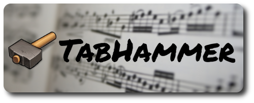
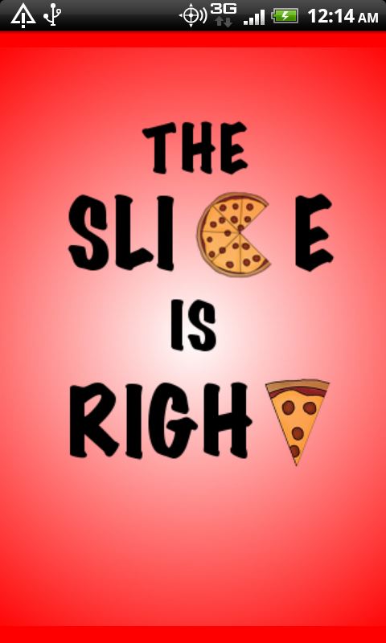
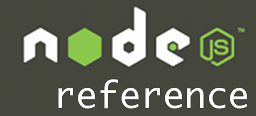

Projects
Collaborate with your Facebook friends in creating the ultimate playlist of YouTube videos.
-
Create and manage YouTube playlists
-
View and comment on Facebook friends' playlists
-
Build a mega-playlist with your friends

Learn new music and manage your personal portfolio of tabs & sheet music.
-
View the best guitar tablature on the web
-
Learn from the artist or an instructor video
-
Reference chords and scale theory
-
Build and manage a personal portfolio of songs

Discover pizza locally or near a specified location.
Are you on a mission to find the best pizza in town?
Or maybe you're on the road and craving slices?
Don't settle for cheap Chinese takeout or fast food.
'The Slice is Right' has your back and is the perfect tool for all pizza lovers.

Offline API reference & documentation for Node.JS
Academic Samples